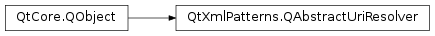

QAbstractUriResolver¶
Detailed Description¶
The
PySide2.QtXmlPatterns.QAbstractUriResolverclass is a callback interface for resolving Uniform Resource Identifiers. A Uniform Resource Identifier (URI) is a string that uniquely identifies a resource. URIs are versatile global identifiers. It is often useful to transform a URI that identifies something logical into a URI that locates something physical (a URL), or to simply map a URI to a different URI.QAbstractUriResolver.resolve()provides this functionality.For example, one could write a
PySide2.QtXmlPatterns.QAbstractUriResolversubclass that rewrites library ISBN number URIs as book title URLs, e.g., urn:isbn:0-345-33973-8 would be rewritten as file:///books/returnOfTheKing.doc . Or aPySide2.QtXmlPatterns.QAbstractUriResolversubclass could be written for a web browser to let the web browser protect the user’s private files by mapping incoming requests for them to null URIs.See also
http://en.wikipedia.org/wiki/Uniform_Resource_Identifier
-
class
PySide2.QtXmlPatterns.QAbstractUriResolver([parent=nullptr])¶ Parameters: parent – PySide2.QtCore.QObjectConstructs a
PySide2.QtXmlPatterns.QAbstractUriResolverwith the specifiedparent.
-
PySide2.QtXmlPatterns.QAbstractUriResolver.resolve(relative, baseURI)¶ Parameters: - relative –
PySide2.QtCore.QUrl - baseURI –
PySide2.QtCore.QUrl
Return type: Returns the
relativeURI resolved using thebaseURI.The caller guarantees that both
relativeandbaseURIare valid, and thatbaseURIis absolute.relativecan be relative, absolute, or empty.The returned
PySide2.QtCore.QUrlcan be a default constructedPySide2.QtCore.QUrl. If it is not a default constructedPySide2.QtCore.QUrl, it will be absolute and valid. If a default constructedPySide2.QtCore.QUrlis returned, it means therelativeURI was not accepted to be resolved.If the reimplemented function decides it has nothing to do about resolving the
relativeURI, it should simply return therelativeURI resolved against thebaseURI, i.e.:return baseURI.resolved(relative);
See also
QUrl.isRelative()QUrl.isValid()- relative –
© 2018 The Qt Company Ltd. Documentation contributions included herein are the copyrights of their respective owners. The documentation provided herein is licensed under the terms of the GNU Free Documentation License version 1.3 as published by the Free Software Foundation. Qt and respective logos are trademarks of The Qt Company Ltd. in Finland and/or other countries worldwide. All other trademarks are property of their respective owners.